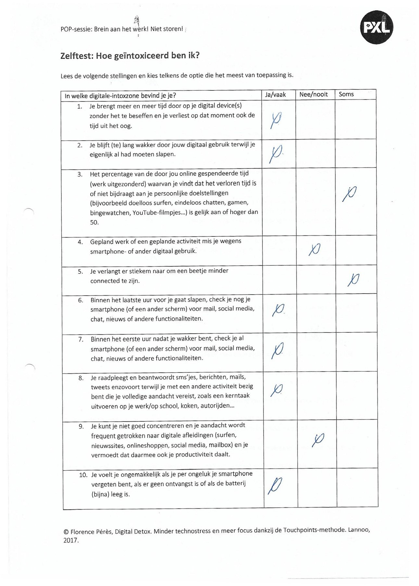
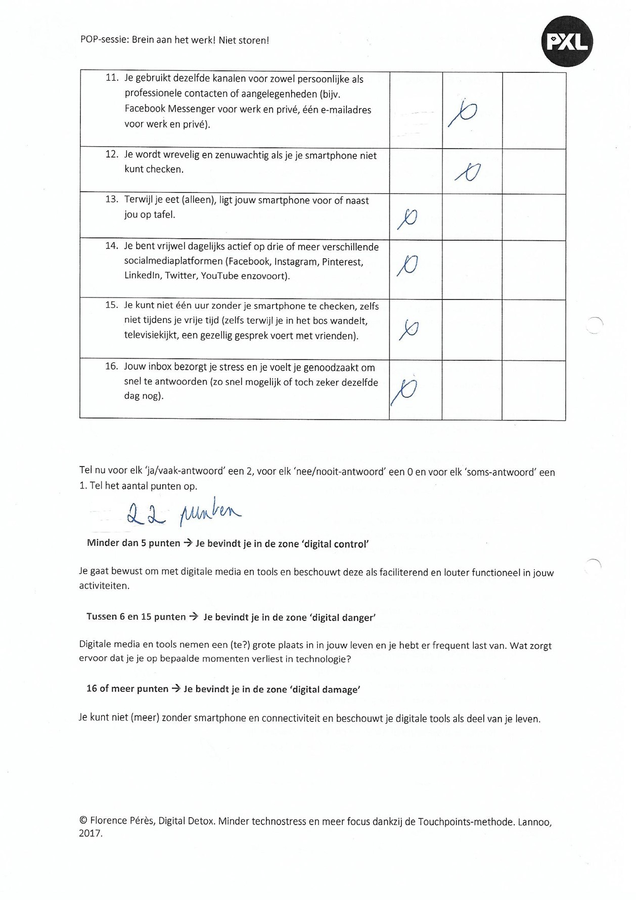
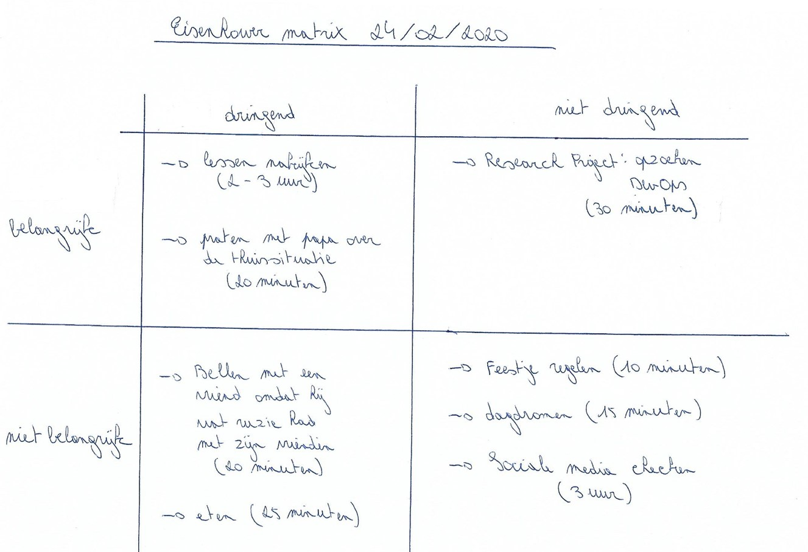
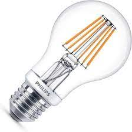

De POP-sessie “Brein aan het werk! Niet storen!” vond plaats op dinsdag drie maart 2020.
Aan de hand van de titel had ik geen flauw idee waarover deze POP-sessie zou gaan.
Aan de aanvang van de sessie dienden we onze gsm vooraan op een tafel te leggen.
Dit was best moeilijk voor mij omdat ik heel erg actief ben op sociale media zoals Facebook, Snapchat en Instagram.
Dit kan je ook afleiden uit de enquête die ik ingevuld heb. Hierbij plaatste ik veel kruisjes in de kolom “Ja/vaak”
en een paar in de kolom “Soms” wat resulteerde in tweeëntwintig punten. Het maximum aantal punten bedroeg
tweeëndertig punten. Ik bevind mij dus in de zone “Digital damage”. Het resultaat verraste mij niet omdat
ik van mezelf wist dat ik niet meer zonder smartphone kon. Ik spendeer dagelijks heel wat uren aan connectiviteit op sociale media.
Tijdens het tweede deel van de sessie mochten we eens nadenken over wanneer we onze smartphone gebruiken en het aantal uren
dat we er aan spenderen. Hierdoor ben ik aan het nadenken geweest omdat ik toch wel enorm veel mijn smartphone gebruik.
Tijdens de lessen Windows Server bijvoorbeeld, als iets aan het installeren is op de servers dan neemt dat enige tijd in beslag.
Dan is het mijn gewoonte om mijn smartphone te nemen en actief te zijn op sociale media.
Wanneer we samen komen met vrienden hebben we nu ook een duidelijke afspraak gemaakt: de smartphone leggen we aan de kant.
Je kan af en toe wel eens op je smartphone kijken maar niet de hele tijd zoals het voor de afspraak aan toe ging.
Deze afspraak was een zeer goede afspraak omdat het nu eens zo fijn is als we samen komen.
Er wordt met andere woorden meer gebabbeld en gelachen dan voordien.

Ook tijdens het avondmaal was ik constant actief op sociale media.
Mijn papa en zus namen het slechte voorbeeld van mij over waardoor we niet meer praatten tijdens het avondmaal.
Omdat ik met mijn vader hieromtrent een gesprek heb gevoerd wordt er nu wel terug gepraat tijdens het avondmaal
en is het dus ook veel gezelliger geworden aan tafel.
Tijdens het studeren ligt mijn smartphone ook constant naast mij waardoor ik nogal snel afgeleid ben.
Gedurende de examenperiodes (juni en augustus 2020) heb ik dan ook geprobeerd om mijn smartphone beneden te laten liggen.
In het begin was dit best een moeilijke opdracht omdat ik mij “leeg” voelde.
Ik zette door en moet zeggen dat het wel degelijk helpt om je smartphone beneden te laten liggen.
Zo heb ik mij goed kunnen focussen en het resultaat mocht er dus ook zijn.
Mits ik mijn smartphone iedere dag mee in bed nam als ik ging slapen bleef ik ook dusdanig lang wakker.
Ik zat tot ’s nachts op mijn smartphone te tokkelen waardoor ik ’s morgens niet uit mijn bed raakte.
Dit resulteerde dat ik mij vaak oversliep. Sinds deze POP-sessie neem ik mijn smartphone wel nog mee naar boven maar ik neem hem niet meer mee in bed.
Ik leg hem aan de kant om een goede nachtrust te hebben. Dit resulteert nu in het feit dat ik een goede nachtrust heb en ’s morgens meestal goed uit mijn bed geraak.

Daarnaast heb ik ook kennisgemaakt met de Eisenhower matrix.
Dit is een matrix waarin je nagaat hoeveel tijd je spendeert aan zowel belangrijke als niet belangrijke behoeften en of deze dringend of net niet dringend zijn.
Hierbij kwam ik weer tot de conclusie dat ik per dag enorm veel tijd spendeer aan behoeften die niet belangrijk en niet dringend zijn.
Voorbeelden hiervan zijn dat ik dagelijks bel met vrienden om feestjes te regelen en toch wel vaak dagdroom.
Ik spendeer te veel tijd aan het checken van sociale media op een dag.
Wat dan wel weer belangrijk is in mijn geval is met mijn papa praten over onze thuissituatie.
We doorstaan al een aantal jaren een hel en als ik met papa er over praat voelen we ons beiden beter.

De POP-sessie “Brein aan het werk! Niet storen!” heeft me doen in zien dat ik mijn smartphone veel te vaak gebruik.
Ik spendeerde enorm veel tijd aan het checken van sociale media waardoor ik minder intensief studeerde
en niet sociaal was bij familiefeesten en bijeenkomsten met vrienden.
Ik ben zelf geschrokken want ik had zelf niet door dat mijn leven grotendeels bepaald werd door mijn smartphone.
Sinds de POP-sessie is mijn leven drastisch veranderd, in positieve zin wel te verstaan. Zo heb ik geleerd
om minder connectief te zijn op sociale media en mij meer en meer te focussen op belangrijke zaken in het leven.
Verder geef ik ook dringende belangrijke zaken voorrang ten opzichte van niet-belangrijke en niet-dringende zaken,
wat voordien het tegengestelde was in mijn geval.
Ik neem deze POP-sessie op in mijn portfolio omdat ik als persoon ben open gebloeid. Ik ben veel socialer geworden
en ben minder connectief wat betreft sociale media. Kortom vind ik het een belangrijk aspect om op te nemen in mijn portfolio.